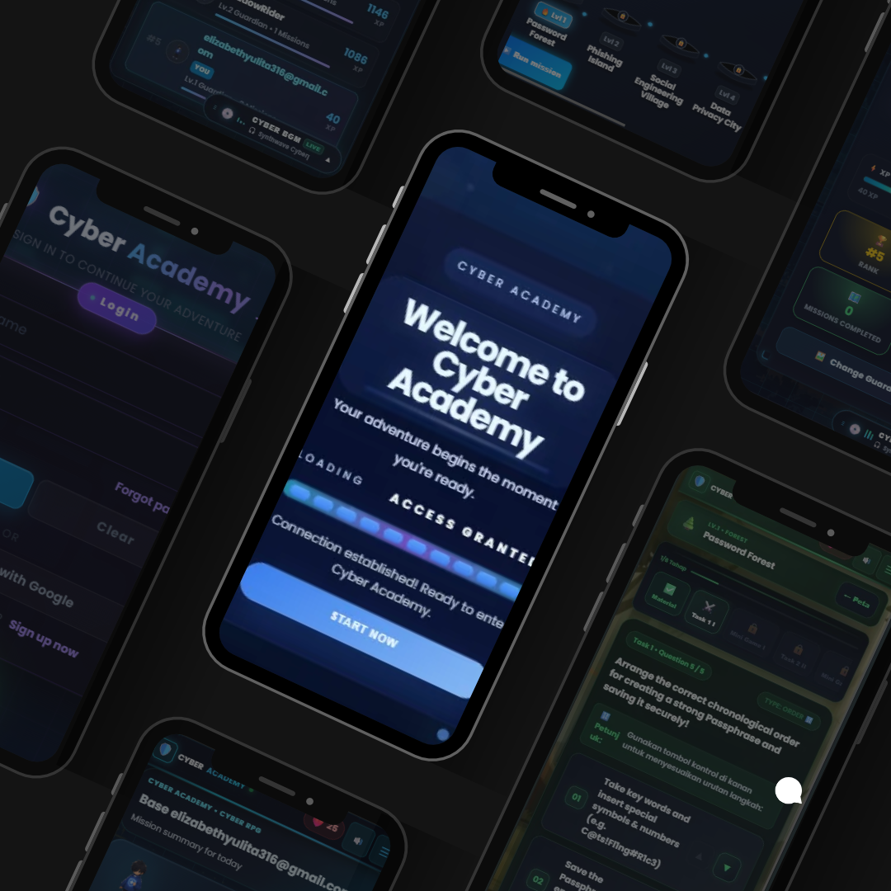

Gamified Cybersecurity Learning
Mengemas pembelajaran keamanan digital ke dalam tujuh level bertema dunia RPG, masing-masing berfokus pada konsep keamanan siber yang berbeda.
Platform edukasi cybersecurity berbasis gamifikasi RPG dengan tujuh level petualangan, materi interaktif, beragam tantangan, dan sistem progres karakter.

Cyber Academy adalah platform pembelajaran keamanan digital yang menggabungkan edukasi dengan pengalaman bermain game RPG. Pemain berperan sebagai Cyber Guardian dan menjelajahi tujuh level bertema keamanan siber, mulai dari Password Forest, Phishing Island, Social Engineering Village, Data Privacy City, Hoax Glacier, Digital Footprint Cloud, hingga Volcano Core sebagai level final boss.
Platform ini dirancang untuk membantu pengguna memahami ancaman digital melalui materi pembelajaran, kuis interaktif, mini-game, dan tantangan berbasis skenario. Dengan sistem progres karakter dan peta petualangan, proses belajar menjadi lebih menarik dan terasa seperti menyelesaikan sebuah misi.
Mengemas pembelajaran keamanan digital ke dalam tujuh level bertema dunia RPG, masing-masing berfokus pada konsep keamanan siber yang berbeda.
Menghadirkan berbagai format tantangan, mulai dari pilihan ganda dan drag-and-drop hingga studi kasus, soal uraian, serta aktivitas mengurutkan langkah.
Menyediakan peta petualangan untuk membantu pemain menjelajahi level, melihat progres, dan melanjutkan misi berikutnya.
Memungkinkan pemain memilih karakter Guardian dan memantau perkembangan melalui level karakter, HP, dan XP.
Menggabungkan mini-game dan tantangan final boss untuk menguji pemahaman pemain terhadap materi keamanan digital.
Menyediakan ringkasan hasil petualangan, statistik penyelesaian misi, halaman kemenangan, dan fitur sertifikat penyelesaian final boss.
Mendukung Bahasa Indonesia dan Bahasa Inggris agar pengalaman belajar dapat diakses dalam dua bahasa.